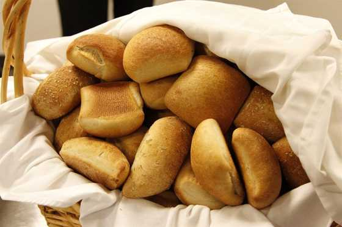

ひろがる香り 田舎のパン屋
納屋の窓から、焼きたての香りが田舎道にひろがっていく。
お店のこと
栃木県塩谷郡高根沢町石末にある、農家の納屋をリノベーションした小さなパン屋です。2025年12月18日にオープンしました。道ばたののぼりが目印で、「隠れ家的」と紹介されています。
店内には、2人の職人のパンが並びます。「田舎のパン」は惣菜パン・菓子パン・食パン、同じ建物の「Croute & Route」はバゲットやベーグルを手がけています。地元・高根沢のいちごを使ったデニッシュもあるそうです。
※店名「ひろがる香り」の由来は確認できていません。「香りがひろがる」という表現は制作側のイメージです。


パンのご紹介
公開情報から分かる範囲のご紹介です。品ぞろえ・価格は準備中とします。

食パン・田舎のパン
価格:準備中

惣菜パン・菓子パン
価格:準備中

バゲット(Croute & Route)
価格:準備中

ハード系のパン
価格:準備中


営業時間・定休日:準備中 / 電話:準備中
口コミ イメージ例
以下は制作側のイメージで作った創作の例です。実際のお客様の声ではありません。
「納屋の素朴な雰囲気が落ち着きます。パンの香りで迷ってしまいました。」
イメージ例
イメージ例
「食パンがやわらかくて、朝ごはんが楽しみになりました。」
イメージ例
イメージ例
「ドライブ途中に寄れる、のんびりした田舎のパン屋さんです。」
イメージ例
イメージ例
アクセス
〒329-1225 栃木県塩谷郡高根沢町石末1521-9
写真はフリー素材のイメージで、店舗の実際の様子ではありません。
写真クレジット
- Weizenfeld (5915377326) (2) / Dominik Bartsch / CC BY 2.0
- Sunrise in a wheat field near Cambridge, UK / sagesolar / CC BY 2.0
- Golden wheat field / Nupur Dasgupta / CC BY 2.0
- Golden wheat field 2 / Nupur Dasgupta / CC BY 2.0
- Sourdough Bread Loaf / Agelaia / CC BY 4.0
- Baguette-246424 / cocoparisienne / CC0 1.0
- Brick-oven-thumbnail / Beboplu / CC0 1.0
- Wood Fired Oven / oakwoodfirepizza.com / CC BY-SA 4.0
- Nach dem Einschießen des Brotes / Wald1siedel / CC BY-SA 3.0
- Wheat flour 01 / congerdesign / CC0 1.0
- Sour dough bread from Jexhof, Bavaria 01 / Kritzolina / CC BY-SA 4.0
- Basket of rolls / Daniel Sone / パブリックドメイン